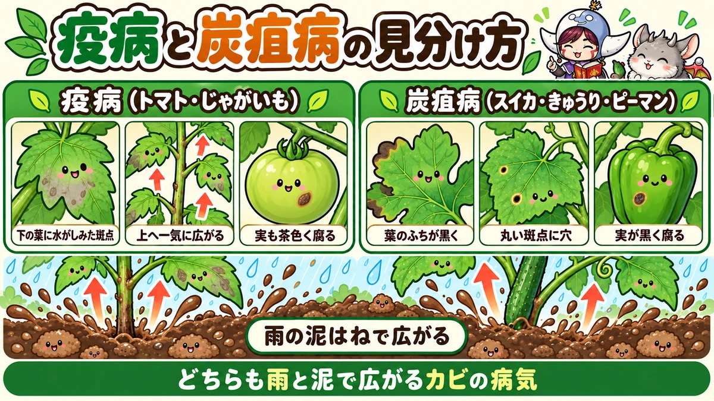
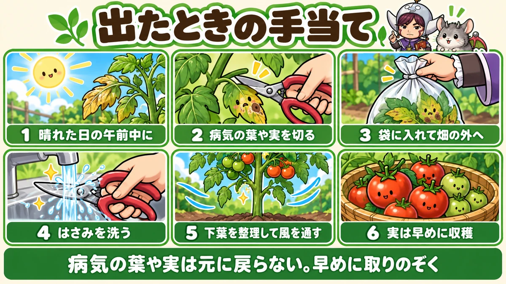
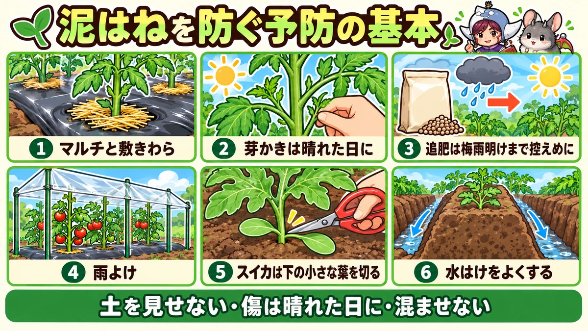

疫病と炭疽病の決定版｜トマト・じゃがいも・スイカ・きゅうり・ピーマンを雨の泥はねから守る、見分け方と防ぎ方
📖 この記事の目次
この記事で分かること
- 疫病と炭疽病は、どちらもカビの仲間が原因の病気です。雨のしずくや、雨で跳ね上がった泥にまじって葉や実につき、広がります。
- 疫病は、トマトやじゃがいもに多く、梅雨どきに下の葉から水がしみたような斑点が出て、一気に広がります。
- 炭疽病は、スイカやきゅうりなどのうりのなかま、ピーマンなどに多く、葉のふちが黒くなったり、丸い斑点ができて穴があいたりします。実に黒い斑点が出て、腐ることもあります。
- いちど出た葉や実は元に戻りません。見つけたら早めに取りのぞき、畑の外で処分します。
- 予防の中心は、泥はねを防ぐこと、風通しをよくすること、雨の日に傷口を作らないこと、肥料、特に窒素を効かせすぎないことです。
6月、梅雨に入って雨の日が続き、久しぶりに晴れて畑に行くと、トマトの下のほうの葉に、黒っぽい斑点がいくつも出ている。数日後には、その上の葉にも、茎にも広がり、青い実まで茶色く腐りはじめる。あるいは、スイカの葉のふちが黒く焼けたようになり、ざらざらとして、やがてぼろぼろに破れていく。こんな経験はありませんか。
雨の多い時期に出るこうした病気の多くは、疫病や炭疽病です。この記事では、2つの病気の見分け方と、出てしまったときの手当て、次に同じことをくり返さないための予防まで、順番に書いていきます。
この記事の読み方
いま畑で病気が広がっていて困っている人は、「見分け方」と「出てしまったら」から読んでください。来年に向けて準備したい人は、「予防の基本」と「野菜ごとの注意」が役に立ちます。
早見：疫病と炭疽病
疫病
- 原因：カビの仲間
- かかりやすい野菜：トマト、じゃがいも。ほかにピーマンなど
- 出やすい時期：梅雨どき。雨が多く、湿気が高いとき
- 症状：下の葉から、水がしみたような、灰色がかった緑から黒っぽい斑点が出る。上の葉、茎、実へと広がる。実は茶色く腐る
- 広がり方：雨の泥はね、芽かきなどでできた傷口から。広がるのがとても速い
炭疽病
- 原因：カビの仲間
- かかりやすい野菜：スイカ、きゅうり、メロンなどうりのなかま、ピーマン、いちごなど
- 出やすい時期：梅雨どき。雨が多い時期
- 症状：葉のふちが黒くなる、葉に丸い斑点ができ、やがて穴があいて枯れる。実に黒い斑点が出て、へこんで腐る
- 広がり方：葉についた雨水が飛び散って、まわりの葉や実にうつる

2つの病気を知る
雨が運ぶカビの病気
疫病も炭疽病も、カビの仲間が原因の病気です。病原菌は、土の中や、病気の葉や実の中にいて、雨のしずくや、雨で跳ね上がった泥にまじって、葉や茎、実につきます。空気中をふわふわと遠くまで飛んでくるというより、水と泥に乗って、すぐ近くへ広がっていくのが特徴です。
湿気が多いと、一気に広がる
どちらの病気も、湿気が多く、葉が濡れている時間が長いと、勢いよく広がります。梅雨どきは、雨の日が続き、晴れても葉が乾きにくく、病気にとって都合のよい条件がそろいます。反対に、梅雨が明けて晴れた日が続き、湿気が下がると、広がる速さはぐっと落ちます。
傷口から入りやすい
芽かきや下葉かきをしたあとの切り口、土寄せで傷んだ茎、強い雨や風でこすれた葉など、傷口があると、病原菌が入りやすくなります。特に、雨の日やその前後に傷口を作ると、乾く前に病原菌が入りこんでしまいます。
株が弱っていると、かかりやすい
収穫が長く続いて株が疲れてきたころ、急に天気が変わったときなど、株の体力が落ちていると、病気にかかりやすくなります。肥料、特に窒素が多すぎて、葉や茎がやわらかく茂りすぎている株も、病気が広がりやすくなります。
見分け方
トマトの疫病
- 下のほうの葉に、水がしみたような、灰色がかった緑色の小さな斑点が出る
- 斑点はすぐに大きくなり、黒っぽく、茶色くなる。葉の裏に、白いかびのようなものが見えることもある
- 葉から茎へ、茎から上の葉へと、どんどん上に広がる
- 青い実にも出て、茶色く、固く腐る
- 雨の多い時期に、数日で株全体に広がることもある
じゃがいもの疫病
- 葉に、水がしみたような黒っぽい斑点が出て、急に広がる
- 湿気が高いと、株全体が一気に黄色くなって枯れこむことがある
- いもまで傷むこともある
スイカの炭疽病
- はじめは、葉のふちのあたりが黒く変わる
- 黒い部分がざらざらとして、やがてぼろぼろに破れる
- 生育の初めは、下のほうの葉から出て、だんだん株の先へ広がる
- 実に黒い斑点が出ると、そこから腐り、大きくならずに傷むことがある
きゅうりの炭疽病
- 葉に、丸い斑点ができる
- 斑点のまんなかが枯れて、穴があき、そこから葉が枯れていく
- 水はけの悪い場所で出やすい
ピーマンの実の病気
- 実の側面の色が変わり、くすんだ色になる
- 進むと、変色したところのまわりが黒く縁どられ、まんなかがふにゃふにゃにやわらかく腐る
- まだ小さい実にも出て、黒っぽく変色することがある
- 炭疽病や疫病など、カビが原因の病気と考えられる
ほかの病気とのちがい
- うどんこ病：葉の表面に、白い粉をまぶしたようなかびが出る。乾いた時期にも出る
- べと病：葉脈に区切られた、角ばった黄色い斑点が出る。うりのなかまや玉ねぎに多い
- 青枯病：葉は緑のまま、株全体が急にしおれる。斑点は出ない
- 疫病：水がしみたような斑点が、雨のあとに一気に広がる。トマト、じゃがいもに多い
- 炭疽病：葉のふちが黒くなる、丸い斑点に穴があく。実に黒い斑点。うりのなかま、ピーマンに多い
はっきり見分けがつかないときでも、雨のあとに斑点が増え、下の葉から広がっているなら、雨と泥で広がる病気と考えて、手当てと予防は同じように進めて大丈夫です。

出てしまったら
病気の葉や実は、元に戻らない
いちど斑点が出た葉や、腐りはじめた実は、元には戻りません。そのままにしておくと、そこから雨水と泥に乗って、まわりの葉や実、となりの株に広がっていきます。
見つけたら、早めに取りのぞく
病気の葉や実を見つけたら、早めに切りとります。斑点が少し出ただけの葉も、思いきって取りのぞきます。実に出た場合も、まだ小さくても、残さずに摘みとります。
取りのぞくときの手順
- 晴れて、葉が乾いている日を選ぶ。できれば午前中に行い、切り口が日のあるうちに乾くようにする
- 病気の葉や実を、はさみで切りとる。葉を揺らして、しずくや胞子を飛ばさないように、そっと切る
- 切りとった葉や実は、地面に落とさず、袋に入れていく
- 袋の口をしばって、畑の外で処分する。堆肥の山には入れない
- 使ったはさみは、そのまま元気な株の収穫や芽かきに使わず、洗ってから使う
はさみを介して広げない
病気の実や葉を切ったはさみで、そのまま健康な実を収穫すると、はさみについた病原菌がうつることがあります。病気の作業は最後にまとめて行い、終わったらはさみと手を洗います。
下の葉を整理して、風を通す
病気が出た株は、下のほうの葉を整理して、株元の風通しをよくします。地面に近い葉は、泥はねを受けやすく、病気の入り口になります。トマトなら、実がついているいちばん下の段より下の葉は、すべて切ってすっきりさせる方法があります。ピーマンも、株元から30cmほどの高さまでの下葉は、切っても育ちに問題はないとされます。
実は、早めに収穫する
病気が出ている株や、これから雨が続きそうなときは、実を早めに収穫しておきます。実をとって株の負担を軽くし、病気の実を増やさないためです。
株ごと抜くかどうか
病気が株全体に広がり、ほとんどの葉が枯れてしまった株は、まわりへの広がりを防ぐために、株ごと抜いて畑の外で処分します。まだ上のほうに元気な葉が残っていて、梅雨明けが近いなら、病気の部分を取りのぞいて様子を見る手もあります。晴れた日が続いて湿気が下がると、病気の広がりはゆっくりになります。
薬を使う場合
病気を予防する薬剤もあります。使う場合は、ラベルに書かれた野菜、使う時期、回数、薄め方を必ず守ります。薬を使っても、泥はねや風通しなどの条件が悪いままだと、なかなか抑えきれません。薬に頼る前に、まず畑の環境を整えます。
予防の基本
1. 泥はねを防ぐ
雨で跳ね上がった泥が葉や実につくのが、病気のいちばんの入り口です。畝にマルチを張る、株元に敷きわらをする、といった方法で、土がむき出しにならないようにします。マルチを張っている畝でも、株元のすき間からは泥が跳ねるので、株元にわらを挟むように敷いておくと安心です。マルチを使わずに育てている場合は、特に敷きわらが大切です。
2. 芽かきは、晴れた日の午前中に
トマトの芽かきは、必ず晴れた日に行います。できれば午前中に行うと、切り口が日のあるうちに乾きます。梅雨どきは雨やくもりの日が多く、わき芽が伸びてくると、早く取らなければと焦って、雨の日に芽かきをしてしまいがちです。雨の日に芽かきをすると、乾かない傷口から病気が入ります。梅雨どきは、多少わき芽が伸びてもかまわないので、晴れる日を待ちます。
3. 窒素を効かせすぎない
疫病は、窒素が多すぎる条件で広がりやすいとされます。トマトの最初の追肥は、ふつう1段目の実が大きくなりはじめたころに行いますが、その時期は梅雨どきと重なりがちです。株の勢いが強いときは、最初の追肥を梅雨明けまで待つという方法があります。元肥も、最初は控えめにします。
4. 風通しをよくする
株や葉が込み合って風通しが悪いと、湿気がこもり、病気が広がりやすくなります。わき芽や込み合ったつるを整理し、下葉を取って、株元に風が通るようにします。スイカのようにつるが広がる野菜は、つるを手で一方向に誘引して、葉が重なり合わないようにします。
5. 雨よけをする
疫病には、雨よけがとても効果的です。トマトの上に屋根のように透明のビニールを張り、葉や実に直接雨が当たらないようにします。雨よけをすると、雨のしずくも泥はねも減らせます。
6. 水はけをよくする
水はけの悪い畑では、湿気がこもり、病気が広がりやすくなります。畝を高めにし、通路に溝を切って、雨のあとに水がたまらないようにします。
7. 病気に強い品種を選ぶ
トマトは、大玉よりも、中玉やミニトマトのほうが、疫病に強い傾向があります。薬を使わずに育てたい人は、中玉やミニトマトを選ぶのもひとつの方法です。
8. 前の野菜の肥料が残っていないか
家庭菜園では、同じ場所でいろいろな野菜を続けて育てるので、前の野菜の肥料が土に残っていることがよくあります。トマトを植えたら思った以上に勢いが強く、葉がもこもこと茂ってしまった、ということも起きます。前に何を育てたかを思い出し、肥料をよく使った野菜のあとなら、元肥を減らすか、入れずに植えることも考えます。

マルチと敷きわらの使い方
マルチは植えつけ前に張る
ポリマルチは、畝を立てたあと、植えつけの前に張ります。土が湿っているときに張ると、土の水分を保ったまま覆えます。マルチの穴をあけて苗を植えたら、植え穴のまわりの土が出ているところにも、あとでわらを敷いておきます。
敷きわらは、梅雨入り前に
敷きわらは、梅雨に入る前に敷いておきます。雨が降りだしてからでは、すでに泥はねが始まっています。株元を中心に、畝の土が見えなくなるくらいに敷きます。わらが手に入らないときは、刈りとった草を乾かしたものでも代わりになります。
株元には、挟むように
マルチを張っている畝でも、植え穴のまわりから泥が跳ねます。株元のすき間に、わらを挟みこむように差し入れておくと、下の葉に泥がつきにくくなります。わらが茎に直接びっしり当たると湿気がこもるので、少しだけすき間をあけます。
わらは、そのまま土に返る
敷きわらは、夏が終わるころにはだいぶ傷んで、土に混ぜこめば有機物として土に返ります。ただし、病気が出た株のまわりのわらは、病原菌がついていることがあるので、片づけのときに畑の外で処分するほうが安心です。
雨よけの作り方
屋根をかけるだけでも効く
雨よけは、トマトの株の上に、屋根のように透明のビニールを張るものです。支柱を株の両側に立て、上で渡した支柱にビニールをかけて、ひもやクリップでとめます。側面は開けたままにして、風が通るようにします。四方を閉めきると、中に湿気がこもって逆効果になります。
雨よけをするときの注意
雨よけをすると、雨水が株元に届きにくくなるので、土が乾きすぎることがあります。晴れが続いたら、株元に水をやります。強い風が吹くとビニールがあおられるので、支柱はしっかり土にさしこみ、ビニールはしっかりとめます。台風が来る前には、いったん外しておきます。
トマトの勢いが強すぎるときの立て直し
葉がもこもこと茂ったら
葉が濃い緑で、内側にくるりと巻いたり、もこもこと波打ったりして、茎が太く育ちすぎているときは、窒素が効きすぎているサインです。こうなると、疫病が広がりやすくなります。
土を乾かしぎみにする
窒素の吸い上げを抑えるには、土を乾かしぎみにします。水やりは控えますが、梅雨どきは水をやらなくても雨で土が湿るので、マルチで雨水がしみこむのを抑える、雨よけをする、といった方法をとります。あまりにも勢いが強いときは、植え穴のまわりもふさいで、雨水が入りにくくする方法も紹介されています。
下葉を切る
実がついているいちばん下の段より下の葉は、すべて切りとってすっきりさせます。下葉を切ると、株元の風通しがよくなり、泥はねを受ける葉も減るので、勢いを落ち着かせるのと同時に、疫病の予防にもなります。
わき芽を少し伸ばしてから取る
わき芽は、小さいうちに早めに取るのがふつうです。ただ、勢いが強すぎるときは、わき芽を少し伸ばしてから取ると、伸びたわき芽が肥料を吸ってくれるうえ、取ったときの株への負担で、勢いが少し落ち着きます。もちろん、取るのは晴れた日の午前中です。
野菜ごとの注意
トマト
トマトでいちばん出やすく、いちばん影響を受ける病気が疫病です。大玉トマトを薬を使わずに育てると、下から3段目くらいまでしか収穫できないうちに、疫病で終わってしまうことも少なくありません。マルチや敷きわらで泥はねを防ぎ、芽かきは晴れた日に、追肥は梅雨明けまで控えめに、雨よけができればなおよい、というのが基本です。
梅雨が明けると、疫病の心配はぐっと減ります。その代わり、今度は実を食べる虫が増えてくるので、実の様子をよく見ます。
トマト：中玉やミニを選ぶ
薬を使わずに育てたい人には、大玉より中玉やミニトマトがおすすめです。中玉は、ミニトマトほどではないものの病気に比較的強く、食べごたえもあります。雨よけをしていない畑でも、中玉は疫病がほとんど出なかった、という例も紹介されています。毎年、大玉トマトが疫病で下のほうの段しかとれずに終わってしまう人は、一度中玉を試してみる価値があります。
トマト：最初は肥料を控えめに
窒素の肥料はほとんど入れずに植えはじめ、最初の追肥を梅雨明けまで待つ、という育て方もあります。ふつうは1段目の実が大きくなったころに追肥をしますが、そこを我慢して、梅雨が明けてから追肥を始めます。株の勢いが弱いときは、無理に待たず、少しずつ追肥します。
トマトの栽培の終わりごろ
栽培の終わりが近づくと、株がなり疲れて、病気にかかりやすくなります。天気が急に変わって、雨と晴れをくり返すと、なおさらです。下葉が込み合って風が通らず、泥が跳ね返りやすいと、病気が広がります。下葉をカットし、株元にわらを敷いておきます。
じゃがいも
じゃがいもにとって、疫病はもっとも厳しい病気のひとつです。水はけが悪い畑や、肥料が多すぎる畑で出やすくなります。じゃがいもは乾いた土を好み、肥料も少なくてすむので、元肥を入れすぎないようにします。植える前に、スコップを深く入れて土をよく耕し、水はけをよくしておきます。
いもが小さいからといって、あとから追肥をするのはやめておきます。急に大きくなることはあまりなく、株の勢いが強くなりすぎて、収穫前の疫病を招くことがあります。土寄せは、茎を傷めないように晴れた日に行います。
スイカ
スイカの炭疽病は、育ちはじめのころに、下のほうの葉から広がることがよくあります。苗の根元には、最初に開いた小さな葉（子葉）や、そのあとの小さな葉が残っています。接ぎ木苗では、台木の大きな子葉もついています。これらの葉は、炭疽病が最初に出やすい場所なので、本葉が十分に育ったら、あらかじめ切りとって、株元をすっきりさせておく方法があります。本葉は切らないように気をつけます。
トンネルで育てているときは、換気も大切です。夜が寒いからといって、トンネルを完全に閉めきってしまうと、中に湿気がこもり、炭疽病の原因になります。霜が降りるほど寒い日以外は、すそを少し開けておきます。最低気温が十分に上がってきたら、両側のすそを開けたままにします。
梅雨どきは、つるを一方向にきちんと誘引し、株元から出る余分な子づるやわき芽を取りのぞいて、込み合わないようにします。葉に病気が出たら、見つけしだい切りとります。
スイカ：トンネルの換気の目安
トンネルの換気は、夜の冷えこみを見て決めます。霜が降りるほど寒い日は、すそを下まで閉めます。最低気温が8℃以上あるような日は、すそを完全に閉めず、10〜20cmほど開けておきます。最低気温が毎日10℃以上になってきたら、反対側のすそも開け、そのまま開けっぱなしにしてかまいません。トンネルの手前側を開けておくだけでも、中に風が通ります。
スイカ：子葉を切るときの手順
本葉が5枚ほどに育ったころ、株元を見ると、いちばん下に、接ぎ木苗なら台木の大きな子葉、その上にスイカの小さな子葉、さらにその上に、本葉より小さな最初の葉がついています。これらを、はさみで根元から切りとります。手で摘んでもかまいませんが、はさみのほうがきれいに切れます。本葉は切らないように、1枚ずつ確かめながら切ります。台木の子葉は大きいので、切ると育ちが心配になるかもしれませんが、生育の初めの炭疽病を抑える効果があるとされます。
きゅうり、メロン
きゅうりの炭疽病は、葉に丸い斑点ができ、穴があいて枯れていきます。水はけの悪い場所で出やすいので、畝を高めにし、敷きわらで泥はねを防ぎます。下のほうの古い葉や枯れかけた葉は、早めに取りのぞいて、風通しをよくします。
ピーマン
ピーマンは、夏の後半、株が疲れてきたころに、実の病気が出やすくなります。夕立のような強い雨で泥はねがひどくなると、なおさらです。病気の実はすぐに摘みとり、株元から30cmほどの下葉を整理し、実を早めに収穫して株の負担を軽くします。
いちご
いちごも、炭疽病にかかることがあります。苗を育てる時期の夏に、雨が当たると広がりやすいので、雨の当たらない場所で育てたり、水やりで泥が跳ねないように株元に静かに水をやったりします。
梅雨どきの見回り方
梅雨どきは、晴れ間を見つけて、次のことを確かめます。
- 下のほうの葉に、水がしみたような斑点や、黒い斑点が出ていないか
- 葉の裏に、白いかびのようなものが出ていないか
- 葉のふちが黒くなっていないか
- 実に、黒い斑点やへこみがないか
- 株元の土が、マルチやわらで覆われているか。泥が葉に跳ねていないか
- わき芽や葉が込み合って、株元に風が通らなくなっていないか
- 畝や通路に、水がたまっていないか
雨のあとは、特に下の葉を中心に見ます。斑点を1枚でも見つけたら、その日のうちに取りのぞきます。
どちらの病気にも効く、3つの習慣
疫病と炭疽病は、かかる野菜も症状もちがいますが、広がり方はよく似ています。だから、予防の習慣も共通です。
- 土を見せない：マルチと敷きわらで、畝の土をできるだけ覆っておく。泥はねが減れば、病気の入り口が減る
- 傷は晴れた日に：芽かき、下葉かき、土寄せなど、株に傷をつける作業は、晴れた日の午前中にまとめて行う
- 混ませない：わき芽やつる、下葉を整理して、株元まで風が通るようにする。肥料は控えめにして、茂りすぎないようにする
この3つを梅雨入り前から続けておけば、雨の多い年でも、被害を小さく抑えやすくなります。
病気が出た年の片づけ
株は根まで残さず
栽培が終わったら、病気が出た株は、葉や茎だけでなく、根もできるだけ掘り上げて片づけます。地面に落ちた葉や実も拾い集めます。病原菌は、こうした残りかすの中で生きのびて、次の年の泥はねのもとになります。
堆肥にはしない
病気が出た株の残りかすは、堆肥の山に入れず、袋に入れて畑の外で処分します。堆肥の中で病原菌が生き残ると、堆肥をまいた場所に病気を持ちこむことになります。
支柱やひもも洗う
病気の株に使った支柱やひも、クリップには、病原菌がついていることがあります。支柱は水で洗って乾かしてから片づけ、傷んだひもは処分します。次の年に同じ支柱を使うときも、きれいにしてから使えば安心です。
次は、別のなかまの野菜を
病気が出た場所には、次の年、同じなかまの野菜を続けて植えないようにします。トマトやじゃがいもで疫病が出たら、ナスのなかま以外を、スイカやきゅうりで炭疽病が出たら、うりのなかま以外を植えます。
季節ごとにやること（一般的な地域の目安）
- 3〜4月：じゃがいもの植えつけ。元肥は控えめに。水はけのよい畝を作る
- 4〜5月：トマト、スイカ、きゅうり、ピーマンの植えつけ。マルチを張る。スイカは換気を忘れずに
- 5〜6月：梅雨入り前に、敷きわらを敷き、下葉を整理する。スイカは子葉などの小さな下葉を切る
- 6〜7月：梅雨どき。芽かきは晴れた日の午前中に。追肥は控えめに。斑点を見つけたらすぐ取りのぞく
- 7〜8月：梅雨明け後、トマトの追肥を再開。ピーマンは夏の後半の実の病気に注意
説明が分かれるところ
わき芽はすぐ取るか、待つか
トマトのわき芽は、小さいうちに早めに取るのが基本、という説明が多くあります。一方、梅雨どきは、雨の日に焦って取るより、多少伸びても晴れる日を待つほうが、病気を防げるという考え方もあります。どちらも、傷口を早く乾かすことが目的です。天気を見て、晴れた日の午前中に取ると決めておけば、両方の考えを満たせます。
貝殻の石灰を葉にふりかける方法
スイカの炭疽病の予防に、カキ殻などの貝殻からできた石灰を、葉の上から薄くふりかける方法が紹介されています。貝殻の石灰は効き方がおだやかなので、葉にかけても傷めにくいとされます。一方、効き目の強い石灰を葉にかけると葉を傷めるおそれがあります。試すときは、貝殻の石灰を使い、少しの葉で様子を見てから広げます。
よくある失敗
雨の日に、芽かきをした
乾かない切り口から、病気が入りこみます。芽かきは晴れた日の午前中に行います。
梅雨どきに、追肥をたっぷりした
窒素が効きすぎて株がやわらかく茂り、疫病が広がりやすくなります。株の勢いが強いときは、追肥を梅雨明けまで待ちます。
病気の葉を、畝の上に置いた
病原菌が残り、雨でまた跳ね上がって、元気な葉にうつります。病気の葉や実は袋に入れ、畑の外で処分します。
病気の実を切ったはさみで、収穫を続けた
はさみについた病原菌が、元気な実にうつることがあります。病気の作業は最後にし、はさみは洗います。
トンネルを、夜は閉めきっていた
中に湿気がこもり、炭疽病が出やすくなります。霜が降りるほど寒い日以外は、すそを少し開けておきます。
マルチを張ったので、敷きわらはいらないと思った
マルチを張っていても、植え穴のまわりの土は出ています。株元から泥が跳ねるので、株元にわらを挟んでおくと安心です。
よくある質問
病気の出た実は、食べられますか
病気の部分を大きく切りとれば、残りを食べることはできると言われます。ただ、病気は少しずつ広がっていくので、その実を株に残しておくと、まわりにうつります。見つけたら、早めに摘みとります。
同じ場所に、来年もトマトを植えていいですか
疫病や炭疽病の病原菌は、病気の葉や実のかけら、土の中に残ることがあります。病気が出た株は、根や葉を残さず片づけます。トマトやじゃがいもなど、同じなかまの野菜を続けて同じ場所に植えないようにすると安心です。
芽かきは、はさみと手のどちらがいいですか
小さいわき芽なら、手で摘みとるのが手軽です。はさみを使う場合は、株から株へ移るときに刃を拭いておくと、病気をうつしにくくなります。どちらの場合も、晴れた日の午前中に行い、切り口が早く乾くようにします。
トマトとじゃがいもを、近くに植えても大丈夫ですか
どちらも疫病にかかりやすい野菜です。近くに植えると、片方に出た病気が、もう片方にうつりやすくなります。できれば、離して植えます。
毎日雨で、晴れる日がありません
晴れ間を待つしかありませんが、雨がやんで葉が乾いた時間をねらって、病気の葉を取りのぞきます。雨よけができるなら、この時期だけでも張っておくと、被害を大きく減らせます。
スイカの実に、黒い斑点が出ました
炭疽病が実にうつった可能性があります。実に出ると、そこから少しずつ腐っていき、大きくならずに傷むことが多くなります。まわりの葉や実に広げないよう、早めに摘みとって処分します。ほかの実は、地面に直接触れないよう、下にわらやマットを敷いておくと、泥はねを受けにくくなります。
雨の日に収穫してもいいですか
熟した実をそのままにしておくと、割れたり傷んだりするので、収穫はしてかまいません。ただ、雨の日は葉や実が濡れていて、病原菌が広がりやすい状態です。病気の株にさわったあとに元気な株にさわらない、はさみは株ごとに拭く、といった点に気をつけます。芽かきや下葉かきのような、傷口を作る作業は、晴れた日にまわします。
トマトの青い実だけが、茶色く腐っています
疫病が実にうつっている可能性があります。実の表面が茶色くなり、固く、つやのないまま傷んでいくのが特徴です。その実は摘みとって処分し、同じ株の葉や茎に斑点が出ていないかも確かめます。
敷きわらが手に入りません
刈りとった草を乾かして使うことができます。畑のまわりの草を刈って、数日干してから敷くと、敷きわらの代わりになります。マルチだけでも泥はねは大きく減らせるので、まずはマルチを張り、株元のすき間に草を挟んでおきます。
梅雨が明けたら、もう安心ですか
湿気が下がるので、疫病や炭疽病の広がりはゆっくりになります。ただ、夏の後半にも、夕立や台風などの強い雨のあとには、また出ることがあります。夏の後半は、株も疲れてくるので、敷きわらは片づけずに残しておき、病気の葉や実を見つけたら取りのぞく、という見回りを続けます。
病気の葉を取ったら、葉がほとんどなくなりました
上のほうに新しい葉が残っていれば、株は持ち直すことがあります。病気の葉を残しておくより、思いきって取ったほうが、まわりへの広がりを防げます。晴れた日が続けば、新しい葉が伸びてきます。
プランターでも出ますか
出ることがあります。プランターは、雨の当たらない軒下に移すことができるのが強みです。長雨のあいだだけでも、雨の当たらない場所に置くと、病気を防ぎやすくなります。水やりのときは、土が跳ねないように株元に静かにやります。
学ぶ：雨と病気のしくみ🔬
なぜ、泥はねで病気がうつるのか
疫病や炭疽病の病原菌は、土の中や、地面に落ちた病気の葉のかけらの中で生きのびています。雨粒が地面に当たると、小さな泥のしぶきが跳ね上がり、その中に病原菌がまじって、下のほうの葉や実につきます。下の葉から病気が出はじめることが多いのは、このためです。マルチや敷きわらで土を覆うと、このしぶきが減ります。
なぜ、葉が濡れていると広がるのか
葉についた病原菌は、水があるときに芽を出して、葉の中に入りこみます。雨が続いて葉が濡れている時間が長いほど、入りこむ機会が増えます。風通しをよくして、葉が早く乾くようにすることが、予防になるのはこのためです。
なぜ、窒素が多いとかかりやすいのか
窒素が多いと、葉や茎がどんどん育ち、やわらかく、みずみずしい株になります。こうした株は、病原菌が入りこみやすく、葉も茂りすぎて風通しが悪くなります。肥料を控えめにして、がっしりと育てた株は、病気に負けにくくなります。
なぜ、下の葉から出るのか
雨粒で跳ね上がった泥のしぶきは、地面に近い高さほど多く届きます。そのため、いちばん地面に近い下の葉や、株元の小さな葉が、最初に病原菌を受けとめることになります。スイカで子葉などの小さな下葉を切ったり、トマトやピーマンで下葉を整理したりするのは、この最初の受け皿をなくすためです。
なぜ、梅雨が明けると落ち着くのか
病原菌が葉の中に入りこむには、葉の表面に水があることが必要です。梅雨が明けて晴れの日が続くと、葉が濡れている時間が短くなり、湿気も下がるので、病原菌が入りこむ機会が減ります。広がる速さが落ちる間に、株は新しい葉を伸ばして持ち直します。梅雨どきの手当ては、この時期までもちこたえるためのもの、とも言えます。
まとめ
ここまで読んでくださって、ありがとうございます！
疫病と炭疽病のポイントを、もう一度まとめておきます。
- どちらも、雨のしずくと泥はねで広がるカビの病気。梅雨どきに多い
- 疫病はトマトとじゃがいも、炭疽病はうりのなかまとピーマンに多い
- 病気の葉や実は元に戻らない。晴れた日に早めに取りのぞき、畑の外で処分。はさみは洗う
- 予防は、マルチと敷きわらで泥はねを防ぐ、芽かきは晴れた日の午前中、窒素を控えめに、風通し、雨よけ
- 梅雨が明けて湿気が下がると、広がりはゆっくりになる
梅雨に入る前に、株元にわらを一つかみ敷いておくだけでも、泥はねはぐっと減ります。まずはそこから始めてみてください☔
敷きわら
梅雨入り前に株元へ。マルチの植え穴のすき間にも挟むと、下の葉に泥がつきにくくなります。
![[商品価格に関しましては、リンクが作成された時点と現時点で情報が変更されている場合がございます。]](https://hbb.afl.rakuten.co.jp/hgb/56bc2fb2.ff40a6e6.56bc2fb3.618f6a70/?me_id=1257026&item_id=10000211&pc=https%3A%2F%2Fthumbnail.image.rakuten.co.jp%2F%400_mall%2Fsharuka%2Fcabinet%2F09042254%2Fimgrc0081094692.jpg%3F_ex%3D240x240&s=240x240&t=picttext "[商品価格に関しましては、リンクが作成された時点と現時点で情報が変更されている場合がございます。]")

黒マルチ
植えつけ前に畝を覆って、雨の泥はねを大きく減らします。草も抑えられます。

園芸ばさみ
病気の葉や実を、晴れた日にそっと切りとるのに。使ったあとは洗ってから収穫に使います。
![[商品価格に関しましては、リンクが作成された時点と現時点で情報が変更されている場合がございます。]](https://hbb.afl.rakuten.co.jp/hgb/56d22030.def85fa7.56d22031.b89fde86/?me_id=1250472&item_id=10022339&pc=https%3A%2F%2Fthumbnail.image.rakuten.co.jp%2F%400_mall%2Fplantz%2Fcabinet%2F01%2Ft-13.jpg%3F_ex%3D240x240&s=240x240&t=picttext "[商品価格に関しましては、リンクが作成された時点と現時点で情報が変更されている場合がございます。]")
次に読む
記事一覧へ